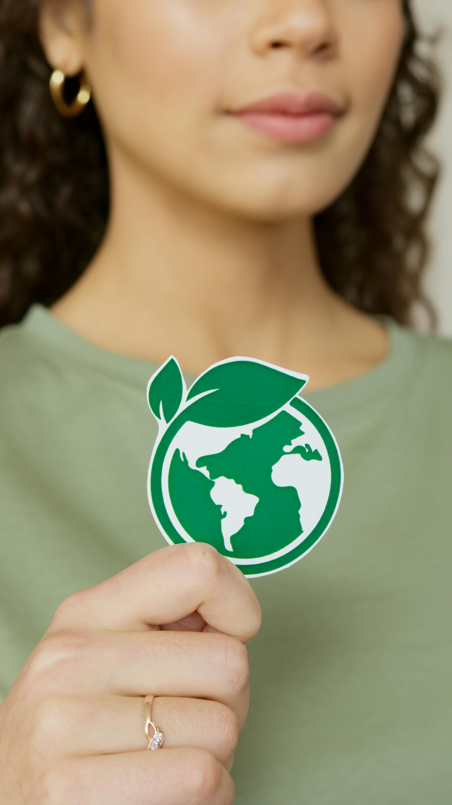

A propos
Découvrez mon parcours et mon expertise
Ce que je peux vous apporter
LA QUALITE
La démarche Qualité permet de :
- Répondre aux besoins et attentes des clients
- Garantir la conformité des produits ou services
- Réduire les erreurs et dysfonctionnements
- Améliorer la satisfaction et la confiance
Objectif : fournir une qualité constante et maîtrisée
SANTE ET SECURITE AU TRAVAIL
La démarche Santé & Sécurité au travail vise à :
- Prévenir les accidents et maladies professionnelles
- Identifier et réduire les risques
- Améliorer les conditions de travail
- Respecter les obligations réglementaires
Objectif : préserver l'intégrité physique et mentale des collaborateurs

LA DEMARCHE ENVIRONNEMENTALE
La démarche Environnement permet de :
- Limiter les pollutions et les nuisances
- Réduire la consommation d'énergie et de ressources
- Gérer les déchets de manière responsable
- Se conformer aux réglementations environnementales
Objectif : réduire l'empreinte environnementale de l'activité
LA RESPONSABILITE SOCIETALE
La démarche RSE visa à :
- Agir de manière éthique et responsable
- Prendre en compte les impacts sociaux et sociétaux
- Favoriser l'inclusion, la diversité et l'égalité
- Contribuer positivement au territoire et à la société
Objectif : concilier performance économique et responsabilité sociale
QUI SUIS-JE ?
Je suis France Fath, consultante et formatrice auprès des entreprises. Après un diplôme en management en qualité, sécurité, environnement, j'ai choisi de me spécialiser dans l'accompagnement des équipes et le développement des compétences dans les entreprises. Depuis plus de 10 ans, j'ai travaillé avec des entreprises de secteurs variés – santé, numérique, industrie – pour améliorer leurs pratiques et renforcer les talents de leurs collaborateurs. Mes domaines de prédilection : leadership, management qualité, santé, sécurité, bien-être au travail, gestion environnementale et responsabilité sociétale. Vous souhaitez développer vos équipes ou relever de nouveaux défis ? N'hésitez pas à me contacter pour en discuter.
Envie d'en savoir plus ?
Contactez-moi pour discuter de vos projets et découvrir comment je peux vous accompagner.
Contactez-moi